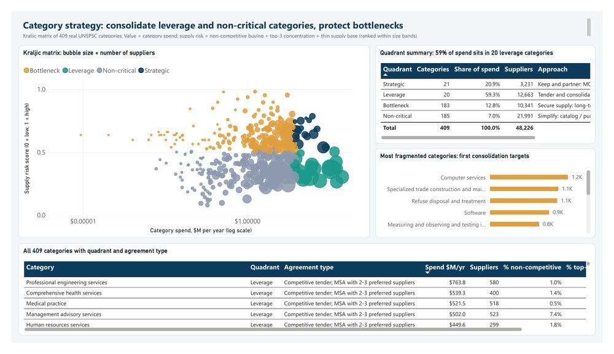
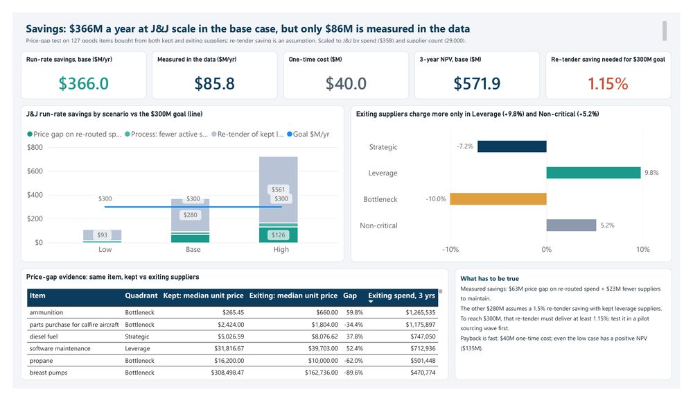
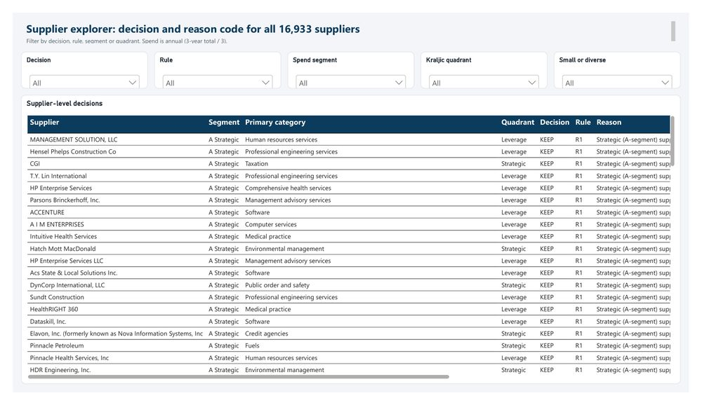

Supplier rationalization: fewer suppliers, stronger agreements.
Which of J&J’s ~29,000 suppliers should it keep, consolidate or exit, with a data reason for every exit, and what is that worth?
Key results
- −73%supplier records (16,933 → 4,648) with a rule-based reason code for every exit
- 87%of spend stays with the suppliers kept, and 96.6% of small and diverse supplier spend
- $366Ma year at J&J scale in the base case for $40M one-time; only $86M of it is measured in the data
Before and after
On the real purchase-order data, before rationalization and after the keep / consolidate / exit rules are applied.
- Supplier recordsevery supplier code in the data
- Active suppliersa PO in the last 18 months
- Suppliers per categorymedian across 409 categories
- Spend per supplieraverage, 3 years
- Records with no reason to existduplicates, inactive, one-time
State of California purchase orders FY2012–15, $21.9B addressable spend after cleaning. “Active” = a purchase order in the last 18 months. Spend per supplier = 3-year spend ÷ suppliers, counting only kept suppliers after.
Scaled to J&J (modeled)
- J&J active suppliersscaled by the same rules
- Run-rate savings per yearbase case; range $105M–$721M
Scaled by J&J’s published ~29,000 suppliers and ~$35B addressable spend. Savings: $63M measured price gap + $23M from fewer suppliers + $280M assumed from re-tendering kept leverage suppliers. One-time cost $40M; 3-year NPV $572M at 8%.
Power BI dashboard
A 4-page Power BI report built on the project’s outputs: 9 tables, 6 relationships and 21 DAX measures, generated as a Power BI project file and checked in Power BI Desktop. Click any page to see it full size.




Recommendation
Cut the tail first: merge duplicate records and close inactive and one-time suppliers (low risk, pays back on process savings alone). Then consolidate fragmented categories onto preferred suppliers and re-tender Leverage categories under volume-tiered MSAs. Never cut a strategic or sole-source supplier; put them on partnership MOUs and add second sources for bottleneck items. Approve the re-tender only once the first MSAs show the 1.15% saving the base case needs.
How each supplier was decided
| Rule | Decision | Suppliers | 3-yr spend |
|---|---|---|---|
| R1 Strategic (top 70% of spend) | Keep | 327 | $15.3B |
| R2 Top-3 in a strategic / bottleneck category | Keep | 369 | $720M |
| R6 Preferred: core of category or top-10% score | Keep | 1,785 | $2.4B |
| R7 Small / diverse guardrail | Keep | 2,167 | $567M |
| R3 Duplicate record (ML name match) | Merge | 838 | $341M |
| R8 Volume moves to preferred suppliers | Consolidate | 2,623 | $567M |
| R4 Inactive 18+ months | Exit | 5,614 | $1.3B |
| R5 One-time vendor | Exit | 3,210 | $637M |
Rules run in order, so a strategic supplier can never be caught by an exit rule. Only $1.2B over three years actually has to move to another supplier.
Savings at J&J scale
| $M per year | Low | Base | High |
|---|---|---|---|
| Price gap on re-routed spend (measured) | 0 | 63 | 126 |
| Fewer suppliers to maintain | 11 | 23 | 34 |
| Re-tender of kept leverage suppliers (assumed) | 93 | 280 | 561 |
| Run-rate savings | 105 | 366 | 721 |
| 3-year NPV (8%, ramp 30/70/100%) | 135 | 572 | 1,165 |
The finding that changed the plan
My first top-down estimate was $385M a year. The price-gap test on 127 goods items bought from both kept and exiting suppliers showed exiting suppliers charged 9.8% more in Leverage and 5.2% more in Non-critical categories, but were cheaper in Bottleneck (−10%) and Strategic (−7%) ones. So price savings only exist where the market is competitive, only $86M of the base case is measured, and the plan pushes price only in Leverage and Non-critical categories.
Real J&J suppliers
Read from the suppliers’ own SEC 10-K filings. Alkermes is the exclusive maker of RISPERDAL CONSTA; MeiraGTx manufactures J&J’s RPGR gene therapy under a 4+1-year supply agreement; Mersana’s clinical supply deal gives J&J a technology-transfer right. Emergent is the counter-example: J&J ended its COVID-19 vaccine contract in 2022 over manufacturing problems, which is why the rules protect sole-source and bottleneck suppliers.
Method
344,504 raw purchase-order lines cleaned in Python and SQLite, every raw row kept with its outcome and reason code. Spend cube and Pareto / ABC segmentation in SQL window functions; a Kraljic matrix of 409 categories; duplicate suppliers found with TF-IDF character n-grams and cosine similarity (scikit-learn); a weighted scorecard and rules R1–R8 for the keep / consolidate / exit decision; a measured price-gap test and low / base / high savings scenarios. Results go to an Excel workbook with live formulas, a Power BI dashboard, a business case and agreement templates (MOU, MSA, supply agreement, catalog terms, transition notices).
Limitations
Public-sector purchasing is a proxy for J&J’s spend, so category mix and prices differ; J&J figures are scaled, not measured. $280M of the $366M base case is an assumption about re-tender savings. Supplier quality, risk scores and contract terms were not available; the price gap uses goods only. Small/diverse status comes from California certifications.